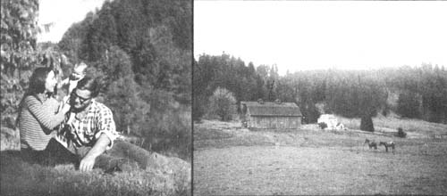
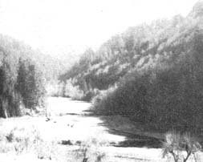
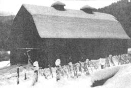

The federal government owns over 765 million acres, or one-third the total area (2.3 billion acres) of the United States. About 500 million acres of this federally owned land is classified as "forest and wildlife" and approximately 100 million acres of the land so classified is listed by the government as "commercial forest".
The Bureau of Land Management-which is a division of the Department of the Interior roughly parallel to the Forest Service in the Department of Agriculture-has exclusive responsibility for the 60% (460 million acres) of the federally owned land. While over hald of the BLM's domain is in Alaska and-like much of the rest-contains little or no timber, the Bureau of Land Management does control several million acres of prime forest in the Pacific Northwest.
According to a Department of the Interior organization chart, BLM land is managed for these multiple uses:
fish and wildlife development,
domestic livestock grazing,
outdoor recreation,
occupancy,
mineral production,
timber production,
watershed protection,
preservation of public values on public land.
WHAT IS WRONG WITH THIS DESCRIPTION?
THE BUREAU OF LAND MANAGEMENT IS PROTECTING (?) YOUR LAND
The spring of 1970 was a good time for John and Betsy Morris. They'd just bought a sprawling 761 acres in the the Windy Peak region of Oregon's Coastal Range, only 40 miles' drive from Eugene.
The young couple's new farm was uncommonly beautiful-wooded ridges rose steeply from pastures watered by two forks of a clear, mountain stream-and much of it was inaccessible except by foot or horseback.
John and Betsy had chosen Thornfield Farm partly because of its seclusion. Refugees from the city-John had been a department manager for Montgomery Wards-they'd searched the pacific Northwest for a quiet, natural setting in which to raise their small children and launch an organic beef farm. Thornfield's narrow, Y-shaped valley at the end of the county road was ideal for both purposes.
John and Betsy felt strongly about preserving Thornsfield Farm's wild beauty and they were pleased that their land was bounded to the north and east by Bureau of Land Management holdings. The Bureau of Land Management is the Department of Interior agency charged with guarding the public's interests on over 400 million acreas of U.S. Government land and the adjacent BLM holdings seemed to promise extra protection from commercial "development".
But the Morrises' faith in the benevolence of the BLM was not to last. Toward the end of July, 1970-little more than a month after they'd moved to Thornfield-a neighbor's chance remark led them to the shocking discovery that the BLM was planning two logging access roads through their back-county retreat.
On August 14, John and Betsy met with the three BLM officials at the Eugene District Office to learn the government's intention first-hand. They were shown a map illustrating the planned access routes. One road was to climb the ridge behing their house (cutting across their gravity-fed, surface-water collection system) and then follow the ridge northeast along their property to ultimately collect with another BLM road... thus creating a through logging trail across Thornfield farm. The second road-unbelievable as it sounds!-was to start from their driveway, slice between their house and barn, continue across their South Fork bottomland pasture... and finally dead-end on BLM land.
Naturally-once they'd caught their breath-the Morrises objected. They were wholeheartedly opposed to the construction of ANY road through Thornfield Farm, let alone logging roads. The three BLM functionaries-Messrs. Von Domelan, Doren and Schaffer-explained that although there were other ways to get the Windy Peaks timber out, the proposed roads were the easiest and cheapest routes for the logging companies . They said flatly that there was nothing John and Betsy could do to prevent the roads from being built.
A month later, on September 16, Von Domelan and Doren drove up unannounced and said they wanted to check the final points on the road construction maps they had with them. John refused to let them on the farm when they told him this was the last step before actual construction began.
That's when the big guns were rolled out. Joseph Dose, BLM's Eugene District Director, sent the Morrises a letter on October 19, stating that he'd "requested condemnation action on your property for the right to enter, survey and mark on-the-ground the location of an easement for forest access roads, to locate such an easement in relation to established property corners, and to appraise the market value of such an easement."
On February 25, 1971, and again on March 25, John's brother David-now a business partner and also living at Thornfield Farm-traveled to Washington, D.C. to talk to Oregon Rep. John R. Dellenback and to national BLM officials. David was told by Messrs. Lynd, Bowen and Russell of the BLM that ALL responsibility for choosing logging routes and implementing BLM policies in the Eugune area lay in the hands of Dose, the district director. Sorry, but nothing could be done at higher levels.
Meantime, the Morrises had hired an attorney, Michael Schmeer, and Schmeer had written to various BLM officials reminding them that they were bound by law to comply with the National Environmental Policy Act of 1969 (Public Law 91-190, 91st Congres, January 1,1970). NEPA specifically provides that
it is the continuing responsibility of the Federal Government to use all practicable means, consistent with other essential considerations of national policy, to improve and coordinated Federal plans, functions, programs, and resources to the end that the Nation may (1) fulfill the responsibilities of each generation as trustee of the environment for succeeding generations; (2) assure for all Americans safe, healthful, productive, and esthetically and culturally pleasing surroundings; (3) attain the widest range of beneficial uses of the environment without degradation, risk to health or safety, or other undesirable and unintended consequences; (4) preserve important historic, cultural, and natural aspects of our national heritage, and maintain, wherever possible, an environment which supposrts diveersity and variety of individual choices...
So, when John and Betsy next met with a BLM representative-on March 22, 1971 with Mr. Zimmerman, BLM assistant state director in Portland-they weren't surprised to learn that the BLM was suddenly concerned about the environment. Zimmerman stressed the "fact" that the planned road through Thornfield Farm were the most ecologically sound routes, however, the bureaucrat fell back on the logging company convenience theme. The through road would open the Windy Peak region to loggers from the Eugene area, he said, and the South Fork road was necessary to "manage" 360 acres of forest in the upper valley.
On April 16, David Morris talked to Dose and his area manager, Bill Bjorge. Dose said that the BLM was investigating alternate passages and would continue to do so even after winning access to Thornfield Farm through court condemnation. Interestingly, Dose admitted that half of the private property owners across whose land BLM want to build roads object for reasons similar to the Morrises'... but added that they all eventually come around. Wonder why.
On May 18, John and Betsy were served notice that the federal district court had granted the BLM temporary possession of their farm to conduct all the activities listed in Dose's letter October 19, 1970. Authority was also conferred for "the United States of America, acting through the Bureau of Land Management of the Department of Interior, its representatives, agents or contractors... to remove, sell, or otherwise dispose of any tree necessary to such survey work." Nothing was said of the BLM's environmental responsibilities or a search for alternate routes.
Included in the court order was a clause informing the Morrises that their "consent" would "constiture a waiver of all defenses and objections" to the condemnation. So, of course, they had to contest the decision. On June 7, 1971 Schmeer submitted an "Answer of Defendants" and-after some legal maneuvering-a hearing was set for July 12.
Meanwhile, the Morisses hadn't been idle. They'd prepared a carefully detailed summary of their struggle with the BLM-including the bureau's legal obligations under NEPA-and on June 5 begain mailing it to everyone they could think of: old friends, relatives, former teachers and employers, congressmen... anyone!
Apparently the Morrises' action had some effect because when David met with Dose on June 22, the district director agreed to prepare an "Environmental Impact Statement" ... as required by NEPA. He promised to accept a counterstatement from the Morisses and Jean and David Eastman, Betsy's siter and brother-in-law, who were also living on Thornfield Farm at the time... and to include it in his final report to the BLM. This from the man who in March had told John and Betsy he wouldn't let petitions, letters or any other form of public opinion sway him!
Back at the courthouse, Schmeer-surprisingly-was able to get the court order nullified on July 12. The court upheld the Morrises' defense because, as Schmeer put it, the judge "was reluctant to permit trees to be cut without some control." (Makes it pretty obvious who wrote that court order in the first place, doesn't it?) The assistant U.S. attorney who was handling the government's side was "somewhat disturbed", and threatened to take it to the Circuit Court of Appeals. So far he hasn't.
But Schmeer warned John and Betsy that they shouldn't count on continuing support from the courts. Once the BLM had an Environmental Impact Statement on file-and providing it isn't a terribly blatant sham-the court will probably feel that the bureau has fulfilled its obligations. Even if the Morrises continue to object, Schmeer believes, it won't do any good... the court will grant the BLM a permanent easement for the two logging roads, and that will be the end of Thornfield Farm.
Still, John and Betsy wouldn't give up. They were discouraged and disillusioned... but they kept on fighting. On August 2, the residents of Thornfield Farm submitted a statement to District Director Dose outlining their objections to the access roads and suggesting several possible alternatives. About the only reaction they've gotten to it was the comment from one BLM employee that it was "kind of emotional, wasn't it?" If you're emotional about having your home destroyed, apparently your arguments don't have to be answered.
Al Schaffer, one of the Eugene BLM officials the Morrises first talked to way back August, 1970-remember when John and Betsy thought being next to BLM land would protect them from the loggers?-came out to Thornfield in mid-September. He asked permission for government "experts" to come on the farm and gather data for the environmental study... permission which the Morrises readily granted.
John and Betsy also recall-with little real amusement-Schaffer's mentioning how idealistic he was about our government. The American government is truly responsive to the individual, he said. A government agency can't just come in and build a road through someone's property... it has to go to some trouble first. Funny how many idealists like that there are nowadays, isn't it?
Since that mid-September day, perhaps a dozen men have visited Thornfield Farm to study various aspects of the area, water quality, stream bed conditions, fish life, forestry (of course), geological conditions, and so on. The Morrises know that those men are not just hiking up into the hills for a picnic-on occasion John and Betsy has gone along-but what happens to the information the "experts" gather is another story that no one will tell the residents of Thornfield Farm.
The BLM has apparently established no timetable for completing the environmental study. When asked about this, Schaffer explained that he didn't want a deadline because he was afraid the people working on the project might become more concerned about the due date than the job at hand. He did admit, however, that the basic resource data wouldn't be completely gathered until spring. At that time in interdisciplinary team of government experts will evaluate the field reports and determine what the Windy Peak area is "best suited for".
The recommendation of this team will then be discussed at a public meeting of local citizens (suppose anyone besides the Thornfield Farm folks will turn up?), before the matter passes back into the hands of BLM Eugene District Director Joe Dose.
From everything John and Betsy have been able to learn, Dose still has the final say. No one in Portland or Washington, D.C. has even so much as implied that his decision might be overriden. Which says a lot in itself. Consider: here we have a government official who is admittedly basing his decision on what is "convenient" for logging companies-to the detriment of the residents of Thornfield Farm (who Dose is charged by law to protect)-yet his superiors are prepared to rubber-stamp whatever he does.
John and Betsy -needless to say aren't optimistic. "We don't think that we can sit back now, put the future of Windy Peak in the BLM's hands and relax. They haven't given us much cause to trust them. For one thing, they termed this about-face a 'victory' for us. When we think of a victory we think of two opposing factions in a battle. Thus it seems to us that, no matter what all their soil scientists and fish biologists say, if the roads are not built the BLM will consider it a defeat."
And we all know how our government feels about defeat.
A STATEMENT OF THE IMPACT ON THE THORNFIELD FARM
HUMAN ENVIRONMENT OF TWO BLM FOREST ACCESS ROADS
IF CONSTRUCTED AS PROPOSED
Excerpted from the statement submitted to Joseph Dose on August 2, 1971
This statement provide detailed response to the National Environmental Policy Act, Section 102 (C) regarding:
(i) THE ENVIRONMENTAL IMPACT OF THE PROPOSED ACTION
NOISE A diesel truck at 50 feet emits 68 to 99 decibels of noise. The danger level to humans is placed at 80 decibels. One may be temporarily deafened by short exposures to 100 to 125 decibles and exposure to anything over 80 decibles of noise for extended periods of time may cause permanent deafness.
FILTH As we travel our driveway now, we see very little traces of man's contamination of the land. There is no litter along the roadside. The nearby trees are fresh and green. This is in very sharp contrast to public road used by logging companies. We find most objectionable beer cans along the roadsides and boughs of trees so heavily laden with dirt and dust that they droop toward the ground. We also find objectionable the thought of having our garden, which supplies most of our food, so contaminated.
DANGER With two very small children (22 months and 5 weeks), the danger of living in the midst of logging trucks is very great. We fail to be pacified by the assurances of the carefulness of logging company drivers-we see much too much evidence to the contrary as we travel Deadwood Creek Road.
There is also danger to livestock and pets. There is danger to any of us walking or driving to our mailbox or barns. These roads will provide a constant threat to our family's safety.
VIOLATION OF PRIVACY These roads would open our land to hunters (with added danger to our children and livestock), fishermen and sightseers, thereby totally destroying the privacy we have now and value so highly.
DETRIMENTAL EFFECTS ON CHOSEN LIVELIHOOD Should our seclusion be destroyed, the continuation of our organic beef operation would be jeopardized, as would be the base for David Morris's artistic career. The difficulties of raising uncontaminated beef would be compounded. The added traffic could bring in pests and diseases which are not present in our valleys now. The poisonous fumes from such traffic would contaminate the meat and the excessive noise would disturb growth patterns, thereby damaging the well-being of our stock. The beauty, peace and serenity of our farm which provides the perfect background for free-lance art work and fine art expression would be destroyed.
(ii)ANY ADVERSE ENVIRONMENTAL EFFECTS WHICH CANNOT BE AVOIDED SHOULD THE PROPOSAL BE IMPLEMENTED.
Any location of the two proposed roads within our valleys will have the same essential effect as the presently proposed route locations. Whether the road up South Fork Bear Creek goes above John and Betsy's home or below the barn does not change the insult it imposes upon our style of life and set of values. The adverse effects described in (i) above therefore are unavoidable if either route, or variations on either of them still within our valleys, is carried out.
(iii) ALTERNATIVES TO THE PROPOSED ACTION
AIR LOGGING At numerous meetings and correspondence with State and District BLM officials it has been pointed out that the South Fork Bear Creek road is necessary to service about 360 acres of timber. We question the economic wisdom of expending public monies for easement purchases and road construction to such a limited acreage. We believe such money would be better spent in developing air logging technology to a point where such permanent "improvements" over private lands will no longer be "necessary". This seems to be a positive alternative, a good investment in the future of forest management and an idea which the Department of Defense would receive in a cooperative spirit considering the pressure they are under to provide civilian jobs for returning servicemen trained in helicopter operation under severe conditions.
EXPERIMENTAL USES Since the area at the head of the South Fork Bear Creek road is of limited acreage, contained within a district watershed and has not yet been enroached upon by man beyond our farm boundaries (this is also true of the Main Fork) we suggest other Federal, Regional, State or local (such as the University of Oregon) agencies might possibly find these conditions favorabe for research, control studies or experimental stations involving no need for heavy equipment access but yielding significant contribution to man's attempts to undestand his environment.
WILD AREA. A third alternative would to declare this watershed a wild area, a wilderness preserve to be added to the much needed wild reserves across the country, unmolested and free from the marks of man's hands.
POSTPONEMENT OF TIMBER EXPLOITATION Finally, if no other solution can be found, we suggest that at the very least the 360 acres would be held in its present state until technology in forest management has a chance to catch up with the uphill logging problems in the upper reaches of South Fork Bear Creek.
We state forthrightly that we do not recognize as legitimate nor justified the BLM's inconveniencing our families' lives, safety and future security so severely in order to provide a transportation convenience for logging companies and management crews who hold no personal investment in maintaining or improving the quality of life of the environment.
ABANDONMENT Because of the above, our first suggested alternative is the obvious one because from our points of view; abandon the idea of a through road system altogether, relying instead entirely on the Greenleaf Creek Road for access to the Windy Peak area.
BUCK CREEK ROAD Our second suggestion, if a through road system is deemed "essential" is to use the already established Duck Creek Road and extend it to tie into the Greenleaf Creek Road.
ACCESS THROUGH KELLER PROPERTY The third suggestion, again if through transportation is all-important, is to ascend to the ridge from the northwest side across our neighbor, Dan Keller's land since he is interested in having a BLM road across his property and we most definitely are not.
(iv) THE RELATIONSHIP BETWEEN LOCAL SHORT-TERM USES OF MAN'S ENVIRONMENT AND THE MAINTENANCE OF ENHANCEMENT OF LONG-TERM PRODUCTIVITY
We wonder if perhaps America's lumber needs and the export of lumber in order to maintain economic balance in international trade for, say, the next twenty years might not be viewed as a short-term issue and the existence of life on this planet as the vital issue in the "maintenance of long-term productivity" and what the implications of such a larger view are on our self-indulgent, high standard of living in this country.
(v) ANY IRREVERSIBLE AND IRRETRIEVABLE COMMITMENTS OF RESOURCES WHICH WOULD BE INVOLVED IN THE PROPOSED ACTION SHOULD IT BE IMPLEMENTED
We have heard much about sustained yield and modern forest management techniques, all presented to assure us that care is being taken to make the most of available forest lands through intensive management. What we are more concerned about is the changing of wild country into one large tree farm operation without careful consideration of what is being done in the process. We are concerned about what happens to the wildlife patterns and inter-relationship in an area as large as yet undisturbed as the Windy Peak area; about what are the effects of logging operations and road construction on run-off, stream silting and aquatic life; about what other kinds of uses of such wild lands as these might be needed in ten or twenty or fifty years for which we might better plan this year while it still exist; about these kinds of things we are concerned and we see no one in this Federal agency actively and aggressively sharing these concerns.
|
 |
 |
 |